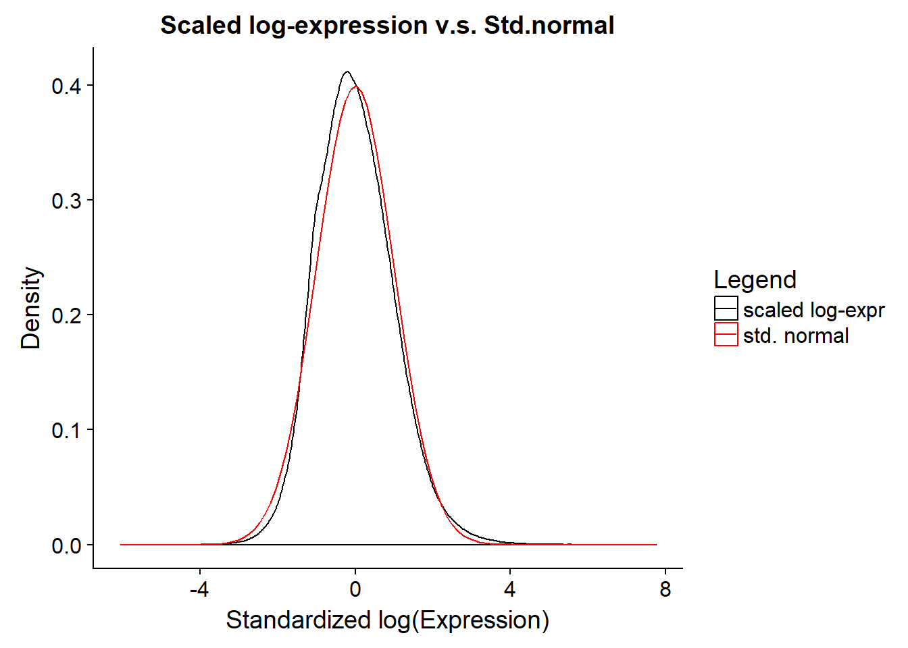
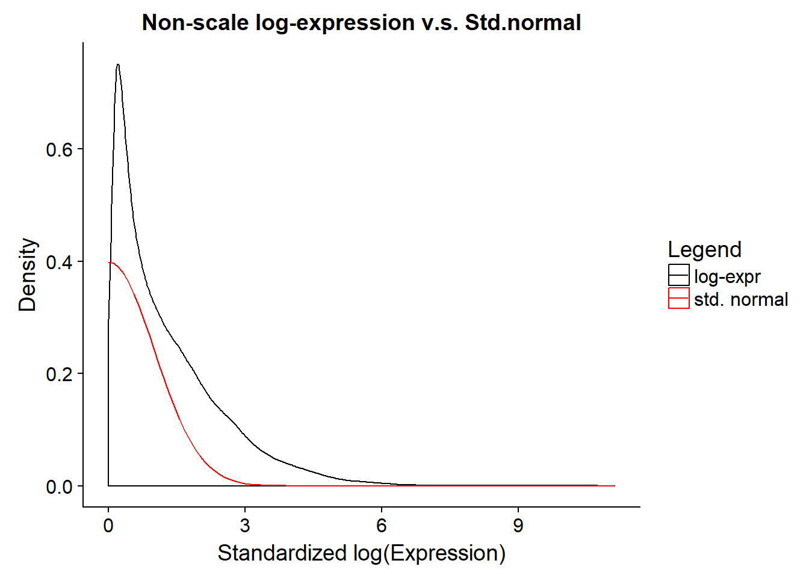

3 Quality Control
Note that Monocle assume the gene expresison is log-normally distributed. So here we perform some filtering and then give it a check..1 And it won’t intervere following analysis since in this bulk analysis, we are not facing issues of Single-Cell protocol like low mRNA cell sample or doublets or triplets, etc.
3.1 gene filtering
human <- detectGenes(human, min_expr = 0.1)
plot(density(fData(human)$num_cells_expressed))The number of cells express a certain gene is bimodal distributed, for \(threshold = .1\), some genes are expressed in all 163 samples, and some genes are only expressed in a little few samples.
expressed.gene <- row.names(subset(fData(human), num_cells_expressed >= 50))- Genes has >= 50 samples with \(RPKM >= .1\) are kept. (22047/54514 genes left)
3.2 check log-nomality
As suggest in Monocle mannual, take log(rpkm + 1), scale each log-transformed gene expression(subtract the mean and divided by \(sd\)), make the whole log-rpkm matrix a single vector then compare it to a standard normal.
L <- log(exprs(human[expressed.gene,]) + 1)Apparently, our filtered data pass the log-normality test. 

Monocle is tuned for Single-Cell RNA-seq, so does the quality control described in the Recommended Analysis Protocol↩